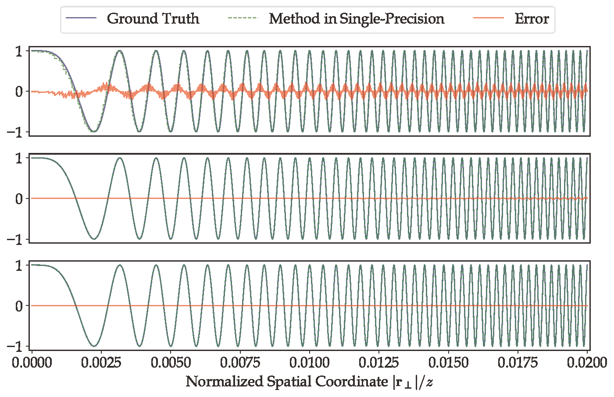

HTRSD: Hybrid Taylor Rayleigh-Sommerfeld diffraction
Ni Chen, Congli Wang, Wolfgang Heidrich
Optics Express
Abstract
Computing wave propagation is of the utmost importance in computational optics, especially three-dimensional optical imaging and computer-generated hologram. The angular spectrum method, based on fast Fourier transforms, is one of the efficient approaches; however, it induces sampling issues. We report a Hybrid Taylor Rayleigh-Sommerfeld diffraction (HTRSD) that achieves more accurate and faster wave propagation than the widely used angular spectrum method.

Fig. 1. (above) Computed PSFs and (bottom) CTFs using different computational approaches. The Naïve way computes the kernels by brute force
computing the square root, resulting in large numerical errors. In contrast, Taylor expanding the square root leads to smaller numerical errors, and further converging to the ground truth with more Taylor terms, here demonstrated by the first two terms.
Resources
Paper [Chen2022OE.pdf]